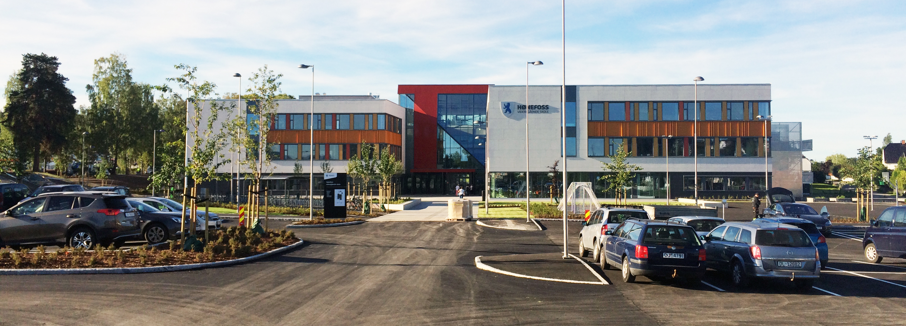

HØNEFOSS VIDEREGÅENDE SKOLE
Om Skolen
Velkommen til Hønefoss vidergående skole. Vi har 850 elever og 160 ansatte. Skolen tilbyr 15 forskjellige utdanningsløp og 35 forskjellige utdanninger. Hønefoss videregående skole står også for opplæring i Ringerike fengsel. Skolen har et stort biblotek som elevene kan benytte seg av, en stor kantine med god mat og mye sitteplas, og gymsal på Hønefoss arena med topp utstyr.